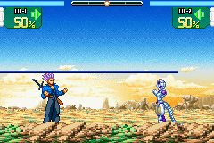
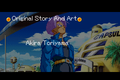
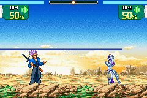
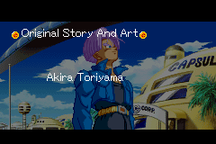

Dragon Ball Z: Supersonic Warriors

Complete on 2019-11-10
4 / 5
Release Date: Jun 22, 2004
Meta Score: 73
Screenshots
 



Notes
Pretty decent 2d fighting game based on Dragon Ball Z. Very nice graphics and animations.
The gameplay isn't really my cup of tea, but it does seem to nicely capture the feel of Dragon Ball Z fights - you fly around punching and firing Ki blasts, and occaisionally someone crashes through a mountain. I never got the hang of the close combat punching, and it was hard to reliably trigger special moves due to the awkward button combo of R+A+B all at once.
Played through one story mode, Trunks', which seemed to be a modified version of the anime story placing Trunks at the fore.